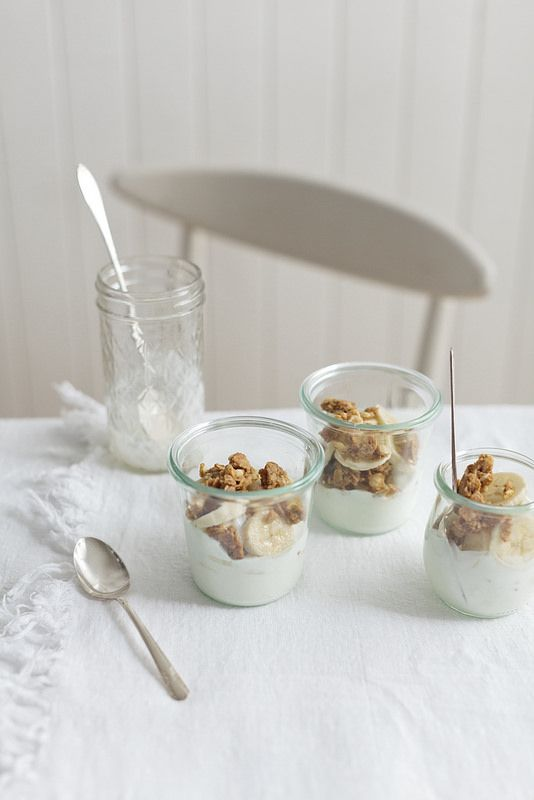
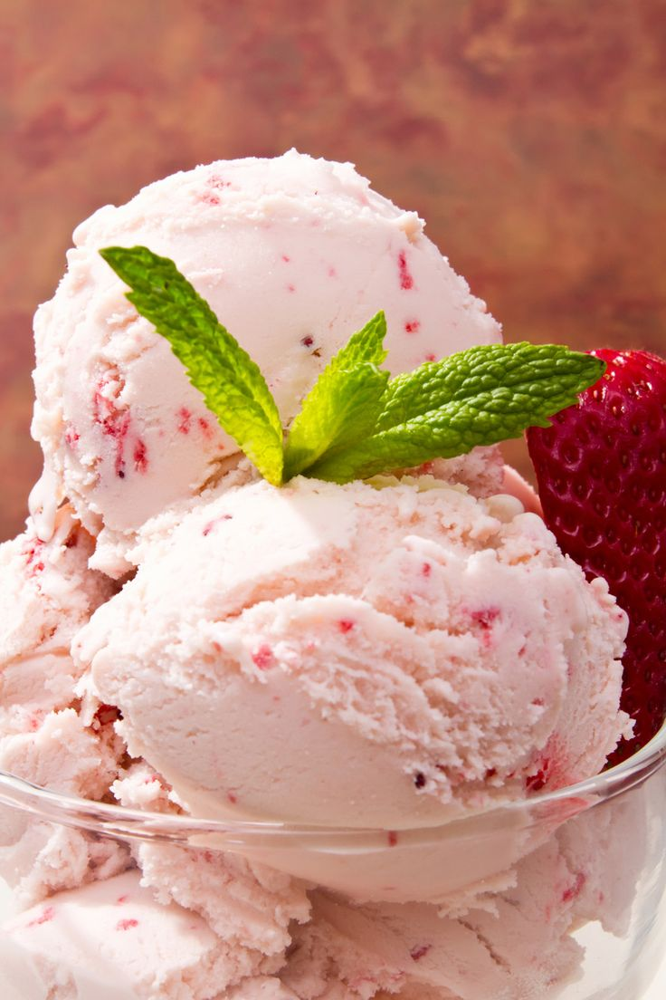

Rețete aronia - 3 deserturi sănătoase și apetisante | Aronia Charlottenburg
 Home Despre Noi Despre Charlottenburg Galerie foto Magazine parterene Blog Contact Magazin Contul meu Română
Contact us
Home Despre Noi Despre Charlottenburg Galerie foto Magazine parterene Blog Contact Magazin Contul meu Română My Cart 0,00 lei My Cart 0,00 lei Blog Home Blog Rețete aronia — 3 deserturi sănătoase și apetisante 04/08/2020 05/08/2020 Blog 1Rețete aronia — 3 deserturi sănătoase și apetisante
Știai că aronia are un efect magic asupra oricărui desert? Nu doar că îl face extrem de gustos, ci și foarte sănătos ! Bogate în fibre, vitamine și antioxidanți, aceste fructe minune sunt ingredientul secret din multe deserturi delicioase și apetisante. Citește în continuare și vei descoperi 3 rețete aronia prin care le poți prepara.
Trebuie doar să le urmezi pas cu pas, iar rezultatele vor fi pe măsură. Pofta de dulce va fi 100% satisfăcută, iar sănătatea celor dragi atent întreținută.
Sună bine? Atunci hai să ne punem pe treabă!
1. Smoothie cu aronia și fructe tropicale
(Sursă foto: halfscratched.com)Rece, fresh și apetisant, acest smoothie tropical te-nviorează de la prima gură. Este ușor de preparat și îți dă energie pentru cât e ziua de lungă. Mai mult decât atât, cu rețeta de mai jos vei obține 2 porții — deci poți răsfăța și o persoană dragă. Uite de ce ai nevoie pentru a-l prepara.
Ingredientele folosite:
1 cană de lapte de migdale (sau lapte de cocos/ lapte obișnuit) 1 cană cu suc natural de portocale 2 linguri mari cu suc de aronia 1/4 cană cu iaurt de vanilie (sau iaurt grecesc) 1 banană 1 cană cu amestec de fructe tropicale congelate (se găsesc la Auchan)Pașii necesari:
Punem laptele, sucul de portocale și sucul de aronia în blender și le mixăm. Adăugăm iaurtul de vanilie și mixăm încă o dată. Decojim banana, o rupem în bucăți și o adăugăm în blender. Mai apoi, le mixăm. Adăugăm fructele tropicale și mixăm compoziția încă o dată, până devine fină și cremoasă. Ne răcorim cu acest tonic gustos și sănătos.2. Brioșe cu aronia
(Sursă foto: nami-nami.blogspot.com)Sunt pufoase, sunt gustoase și atrag toate privirile. Este vorba despre brioșele cu aronia, desigur! Servește-le alături de un pahar de lapte și rezultatul final va fi sănătate curată.
Uite cum poți prepara aceste bunătăți.
Ingredientele folosite:
125 g de unt, la temperatura camerei 100 g de zahăr pudră 2 ouă mari 2 linguri de zahăr vanilat 1 lingură de praf de copt 210 g de făină 100 ml lapte 100 g de fructe de aroniaPașii necesari:
Punem untul și zahărul pudră într-un bol și le mixăm. Punem ouăle pe rând în bol și mixăm compoziția după fiecare ou în parte. Luăm un bol separat în care amestecăm făina, zahărul vanilat și praful de copt. Mai apoi, adăugăm compoziția obținută în bolul cu ouă. Turnăm laptele în această compoziție și le mixăm bine de tot. Punem fructele de aronia în compoziție și le amestecăm ușor cu lingura, până sunt distribuite uniform. Împărțim compoziția în 12 forme de brioșe și le punem în cuptor. Le coacem la 200 de grade C, timp de 15-20 de minute. Ne delectăm familia cu un desert de nota 10. 🙂3. Budincă de aronia și mere
(Sursă foto: nami-nami.blogspot.com)Spune și tu, ai văzut culoare mai frumoasă la o budincă? Iar aspectul nu e totul când vine vorba de budinca de aronia și mere. Aceasta are un conținut bogat în vitamine și un gust de invidiat.
Rețeta în sine este un pic mai complexă, însă cu așa rezultat, merită să o duci până la capăt. Ești gata de o mică provocare? Atunci hai să-i dăm drumul!
Ingredientele folosite:
4 căni de apă (un litru) 1 cană cu fructe de aronia 1 cană cu bucăți mici de mere 100 g de zahăr pudră sare (un vârf de cuțit) 200 g de grișPașii necesari:
Punem fructele de aronia și bucățile de mere într-o oală și turnăm apa peste ele. Le lăsăm pe foc până fierbe apa, după care dăm focul mai mic și le lăsăm să fiarbă aproximativ 15 minute, până când se înmoaie boabele de aronia. Mai apoi, luăm o oală mai mică și o acoperim cu o sită. Turnăm fructele și apa în care au fiert prin sită, și apăsăm fructele din sită (pe cât posibil) cu spatele unei linguri de lemn. Punem sarea și zahărul pudră în oala mica, iar mai apoi o punem pe foc. Așteptăm să fiarbă apa din oala mică, cu noua compoziție. După asta, turnăm grișul în oală și amestecăm bine de tot. Apoi, dăm focul mai mic și fierbem amestecul timp de 10-15 minute. Mai amestecăm din când în când până se îngroașă compoziția. Luăm oala de pe foc și o lăsăm să se răcească aproximativ jumătate de ora. După care, amestecăm totul până devine pufos și cremos, de preferat cu un mixer. Îi surprindem pe cei dragi cu un adevărat deliciu.3 rețete aronia pentru 3 deserturi sănătoase
Și iată am ajuns la final! Acum ai 3 rețete aronia prin care poți obține 3 deserturi sănătoase și apetisante. Sunt 3 deserturi pline de vitamine, minerale și antioxidanți , perfecte atât pentru pofticioșii mici, cât și pentru cei mari.
Te invităm să le încerci pe toate și să-i răsfeți pe cei dragi cu fiecare ocazie. Merită o mică atenție și suntem siguri că îți place să-i surprinzi din când în când.
Comandă chiar acum fructele de aronia de aici , alături de sucul de aronia de aici , și pregătește primul desert cu acest fruct minune chiar săptămâna aceasta.
Mai știi rețete aronia la fel de gustoase?
Iar dacă mai știi rețete aronia la fel de gustoase, te invităm să le scrii în secțiunea de comentarii . Suntem mereu atenți la rețete noi, care aduc zâmbete pe buze. 🙂
aronia , desert aronia , fructe de aronia , retete cu aronia , suc de aronia Ce spun clienții noștri despre beneficiile fructelor aronia Am răspuns la 15 întrebări despre aronia pe care ni le adresați frecventComment (1)
Voiculescu Mariana Luminița spune: 20/08/2020 la 8:16 amBună dimineața! Am văzut că scade tensiunea. Daca o am mică, pot consuma? Mulțumesc!
RăspundeScrie un comentariu Anulează răspunsul
Cautare
Articole
Cum te protejează aronia pe timp de pandemie Am răspuns la 15 întrebări despre aronia pe care ni le adresați frecvent Rețete aronia — 3 deserturi sănătoase și apetisante Ce spun clienții noștri despre beneficiile fructelor aronia Aronia apără și întărește sistemul imunitar Rețete aronia — 3 delicii răcoroase perfecte pentru vara aceasta Cosumul regulat de suc din aronia Aronia Melanocarpa, de la Aronia Charlottenburg. Tot ce trebuie să știi, despre ce știm noi să facem Aronia, totul despre superfructele cu proprietati uimitoare Aronia, beneficii pentru sanatate 5 retete delicioase pe baza de aronia Aronia si cresterea copilului Aronia si diabetul Aronia, o solutie in lupta impotriva cancerului Ce este aronia ? Despre arbustul cu fructe-minune Cum sa faci inghetata delicioasa cu suc de aronia Consumul regulat de suc de aronia reduce grasimea abdominala Sucul de aronia reduce anxietatea si simptomele depresiei Sucul de aronia creste eficienta chimioterapiei in cancerul pancreatic Sucul de aronia excelent in tratamentul impotriva diabetului Alimente Bogate in Antioxidanti si Importanta lor pentru Sanatate Fructele de Aronia: Noul Superfood cu Beneficii Reale pentru Sanatate Suc Natural de Aronia: Inca 5 Motive sa-l Incluzi in Dieta Zilnica Abonare la newsletter aronia suc aronia fructe de aronia aronia pret aronia beneficii Copyright © 2020 Aronia Charlottenburg - Toate drepturile rezervate. Termeni si conditii Confidentialitate GDPR Contul meu